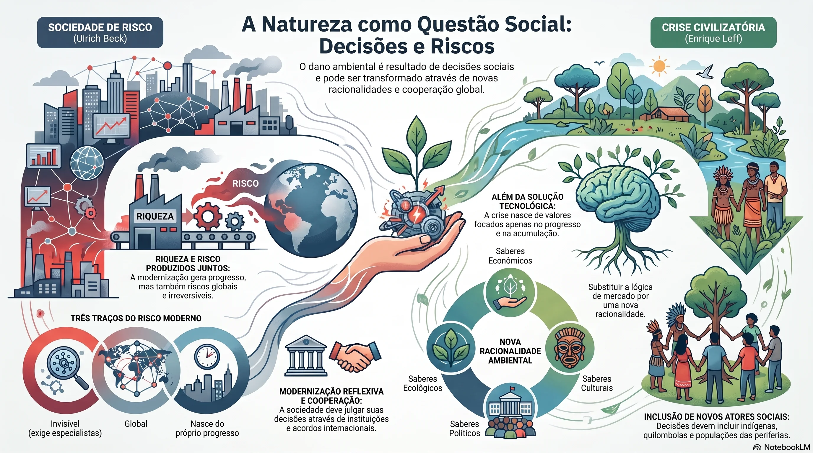
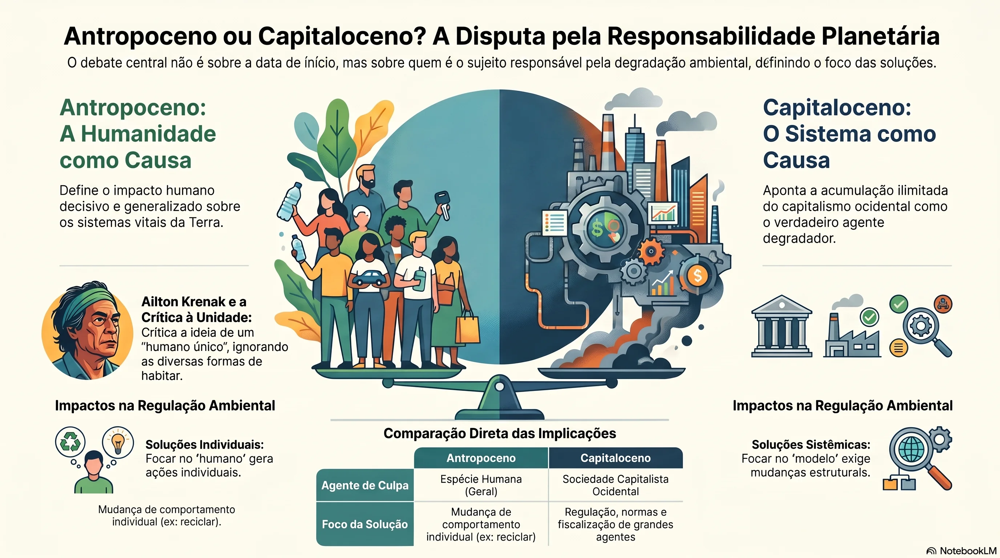
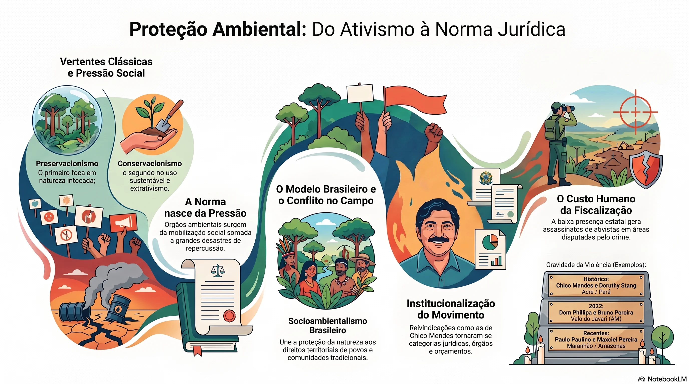
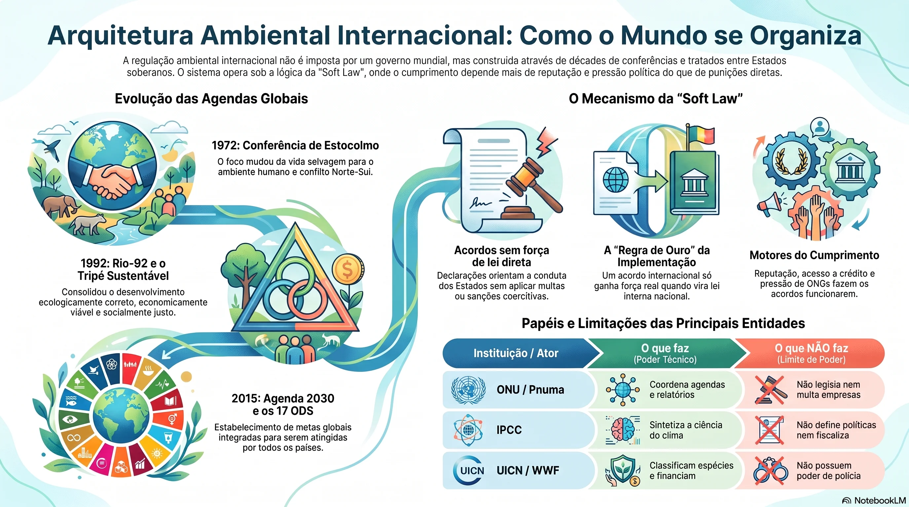
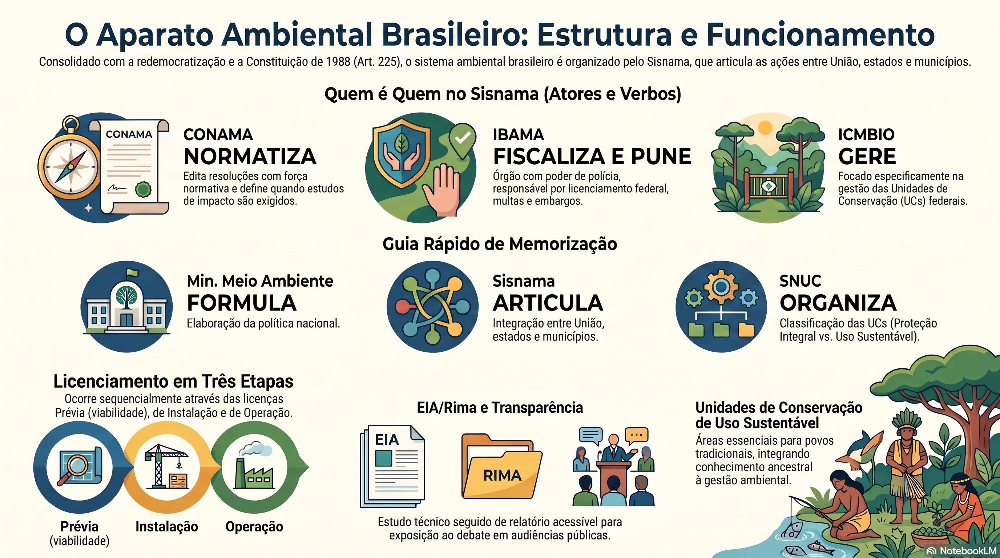
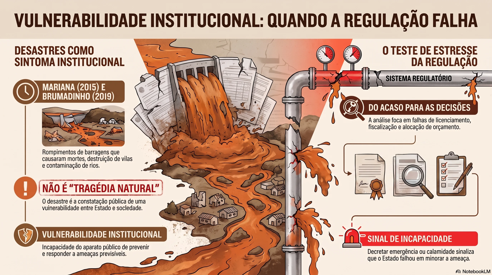
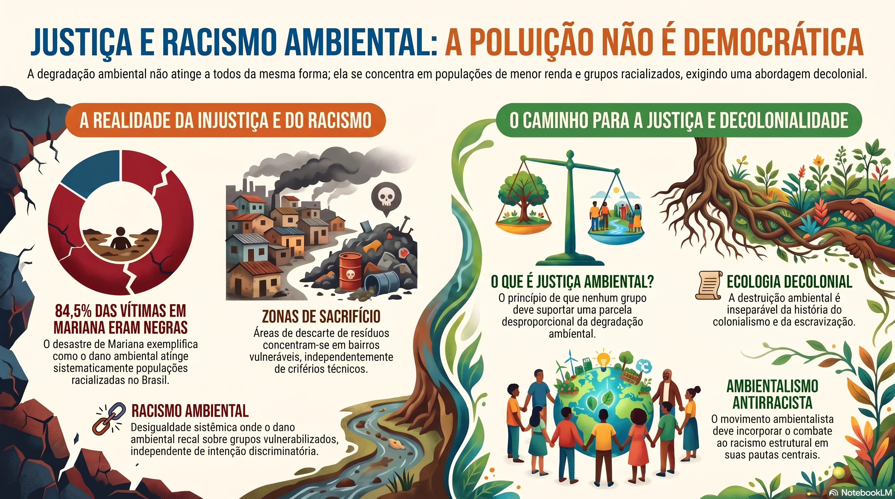
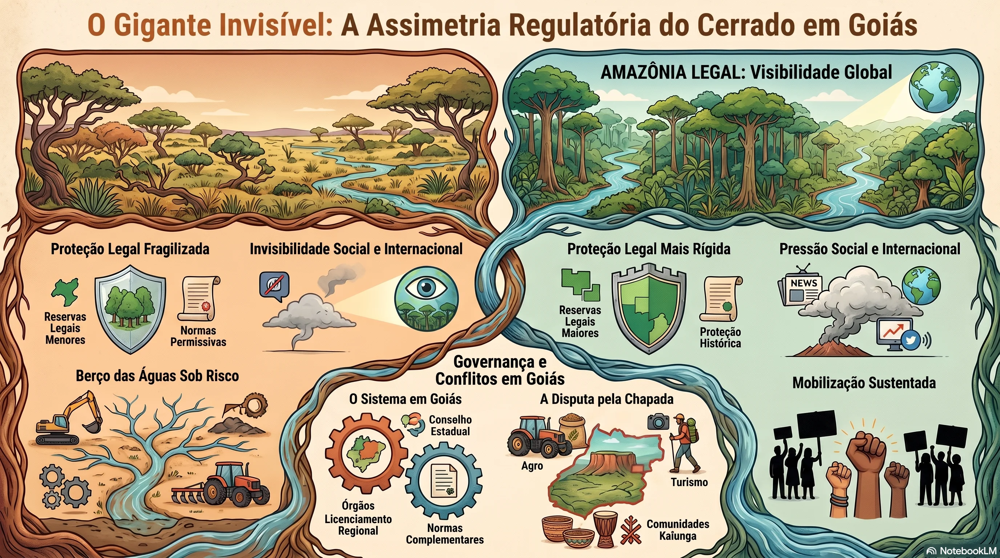
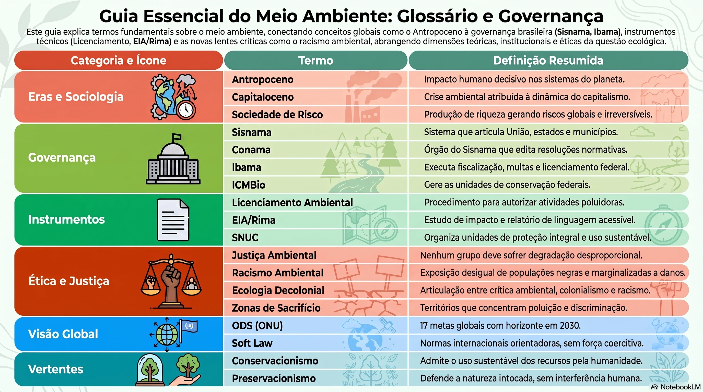

Ao final deste material, você deverá ser capaz de:
- Explicar por que a degradação ambiental é um problema sociológico, e não apenas técnico ou natural, mobilizando as noções de sociedade de risco e de crise civilizatória.
- Identificar os principais organismos nacionais de regulação, controle e fiscalização ambiental e descrever suas competências legais.
- Reconhecer os organismos e acordos internacionais de meio ambiente e discutir seus limites de aplicação (a chamada soft law).
- Analisar como movimentos sociais transformam demandas ambientais em normas jurídicas e políticas públicas.
- Avaliar criticamente a distribuição desigual dos danos ambientais com as categorias de justiça ambiental, injustiça ambiental e racismo ambiental.
- Aplicar um roteiro sociológico para investigar um órgão ou acordo ambiental concreto, inclusive no recorte de Goiás e do Cerrado.
1A natureza como questão social
Durante muito tempo, catástrofes ambientais foram lidas como acidentes: a enchente, a seca, o deslizamento seriam obra do acaso ou da fatalidade. A Sociologia desfaz essa leitura ao mostrar que o dano ambiental é produzido socialmente — decidido em conselhos, licenciado por órgãos públicos, financiado por bancos, distribuído de forma desigual pelo território e cobrado, quase sempre, de quem menos participou da decisão.
Se o dano é produzido por decisões, então ele pode ser regulado por decisões. É exatamente aí que entram os órgãos de regulação, controle e fiscalização e os acordos internacionais: são as instituições que a sociedade criou para tentar governar os efeitos colaterais do próprio modelo de desenvolvimento.
O sociólogo alemão Ulrich Beck (1944-2015) observou que, a partir da segunda metade do século XX, as sociedades industriais passaram a produzir, junto com a riqueza, uma quantidade inédita de riscos: contaminação por radiação, agrotóxicos, acidentes químicos, uso incontrolável de combustíveis fósseis. São riscos de alta consequência e, muitas vezes, irreversíveis.
Esses riscos têm três características que mudam a política: são invisíveis (dependem de laudos e de especialistas para serem percebidos), são globais (não param na fronteira do país que os produziu) e são produzidos pela própria modernização — não vêm de fora, vêm de dentro do progresso. Beck chama de modernização reflexiva esse momento em que a sociedade precisa se voltar sobre si mesma e julgar as consequências das decisões que tomou.
A consequência para o nosso tema é direta: se o risco é invisível e global, ele exige instituições capazes de medir, autorizar, proibir e punir — e exige que essas instituições cooperem para além das fronteiras nacionais.
Para o sociólogo mexicano Enrique Leff (1946-), a crise ambiental não é apenas um desarranjo econômico a ser corrigido com tecnologia mais eficiente. Ela é uma crise civilizatória: nasce de valores que organizam a vida em torno do progresso e da acumulação e que tratam a natureza como obstáculo ou como estoque a ser explorado.
Leff propõe substituir a racionalidade de mercado por uma racionalidade ambiental, apoiada no que ele chama de saber ambiental — um conhecimento que integra ecologia, economia, cultura e política em vez de tratá-las separadamente.
Nem Beck nem Leff fazem previsões apocalípticas. Ambos apontam para a necessidade de cooperação global e, sobretudo, para a entrada de novos atores na decisão ambiental: camponeses, indígenas, quilombolas, moradores de periferias — sujeitos historicamente ausentes das mesas em que se decide o uso do território.
Sociedade de risco: configuração social em que a produção de riquezas passa a vir acompanhada da produção sistemática de riscos globais, invisíveis e de consequências irreversíveis, tornando a gestão desses riscos um problema político central.

2Antropoceno ou Capitaloceno? Quem é o sujeito da degradação
Muitos cientistas defendem que a intervenção humana sobre o planeta é tão profunda que já configuraria uma nova era geológica: o Antropoceno. Não há consenso sobre quando ela teria começado — há quem aponte a máquina a vapor no século XVIII, quem recue até o surgimento da agricultura e quem indique o século XX, com a difusão do plástico.
Do ponto de vista sociológico, porém, a discussão mais decisiva não é a data: é o sujeito. Dizer que "o ser humano" degradou o planeta coloca no mesmo balanço quem emitiu e quem foi atingido, quem lucrou e quem perdeu o rio. O sociólogo Jason Moore (1971-) e a antropóloga Donna Haraway (1944-) propõem, por isso, o termo Capitaloceno: o agente da transformação não seria a humanidade em geral, mas uma organização social específica — a sociedade ocidental capitalista, com sua lógica de acumulação ilimitada.
A crítica ao termo Antropoceno também é etnocêntrica em outro sentido: ao tomar a história ocidental como referência de "humanidade", ela apaga povos cujas formas de vida produziram impactos radicalmente menores. O pensador indígena Ailton Krenak insiste que existe uma pluralidade de modos de habitar a Terra, e que a ideia de um "humano" único é parte do problema, não do diagnóstico.
Essa disputa de nome tem efeito prático sobre a regulação. Se o problema é "a humanidade", a solução tende a ser individual — reciclar, consumir menos, apagar a luz. Se o problema é um modelo econômico, a solução exige norma, fiscalização e responsabilização de agentes concretos: empresas, cadeias produtivas, Estados. É essa segunda leitura que sustenta a existência de órgãos como o Ibama e de acordos como o de Paris.
Capitaloceno: proposta conceitual que atribui a crise ambiental global não à espécie humana em abstrato, mas à dinâmica histórica do capitalismo, evidenciando responsabilidades desiguais entre países, classes e grupos sociais.

3Do movimento social à norma jurídica
Nenhum órgão ambiental nasceu de geração espontânea. O ambientalismo consolidou-se como movimento social ao longo do século XX, criticando o modelo de desenvolvimento baseado na exploração intensiva de recursos e produzindo organizações não governamentais, partidos verdes e redes internacionais. Foi a pressão organizada desses grupos — somada a desastres de grande repercussão — que empurrou Estados a legislar.
Duas vertentes clássicas
| Vertente | Premissa | Consequência para a política pública |
|---|---|---|
| Preservacionismo | Toda interferência humana produz dano; a natureza deve ser mantida intocada. | Criação de áreas de proteção integral, de uso restrito à pesquisa, à educação e ao turismo ecológico. |
| Conservacionismo | O ser humano é parte da natureza; uso e proteção não se separam. | Unidades de uso sustentável, que admitem populações e atividades como o extrativismo. |
No Brasil, a síntese entre as duas vertentes ganhou forma no socioambientalismo, que vincula proteção da natureza a direitos territoriais de povos e comunidades tradicionais. O caso emblemático é o do seringueiro Francisco Alves Mendes Filho, Chico Mendes (1944-1988), assassinado em Xapuri (AC).
Chico Mendes não reivindicava a propriedade individual da terra, mas a garantia de que os seringueiros pudessem continuar vivendo do trabalho na floresta em pé. Sua luta contribuiu para a Aliança dos Povos da Floresta e, mais tarde, para a criação das reservas extrativistas — categoria de unidade de conservação hoje gerida pelo ICMBio, órgão que leva o seu nome.
É um exemplo preciso do que a Sociologia chama de institucionalização de um movimento social: uma reivindicação de baixo se converte em categoria jurídica, em órgão público e em orçamento.
Defender a norma ambiental em território de conflito é atividade de risco. A lista brasileira de ambientalistas, indigenistas e lideranças assassinadas inclui Chico Mendes, Dorothy Stang, Emyra Wajãpi, Paulo Paulino Guajajara e Maxciel Pereira dos Santos. Em 2022, o desaparecimento e a morte do jornalista britânico Dom Phillips e do indigenista brasileiro Bruno Pereira, no Vale do Javari (AM), ganharam repercussão mundial.
Sociologicamente, esses casos indicam algo além da violência individual: revelam áreas de baixa presença estatal, em que a competência legal existe no papel mas a capacidade efetiva de fiscalizar é disputada por madeireiros, garimpeiros e organizações criminosas.

4A arquitetura internacional: organismos e acordos
Como não existe um governo mundial, a regulação ambiental internacional se apoia em organizações multilaterais e em acordos entre Estados soberanos. Entender a diferença entre eles é o passo decisivo para avaliar o que essas instituições conseguem fazer.
Marcos do regime ambiental global
| Organismo | Natureza | O que pode fazer | O que não pode fazer |
|---|---|---|---|
| ONU / Pnuma | Programa intergovernamental | Coordenar agendas, produzir relatórios, promover conferências, apoiar políticas nacionais. | Legislar sobre território de um país ou aplicar multa a uma empresa. |
| Convenções e COPs (clima, biodiversidade) | Tratados entre Estados | Fixar metas negociadas, criar mecanismos de financiamento e de relato periódico. | Obrigar um Estado que não ratificou, ou executar sanções diretamente. |
| IPCC | Painel científico intergovernamental | Sintetizar a produção científica sobre o clima e dar base técnica às negociações. | Definir política pública ou fiscalizar emissões. |
| FAO | Agência especializada da ONU | Orientar uso de solos, pesca, florestas e segurança alimentar; assistência técnica. | Autorizar ou embargar empreendimentos. |
| UICN / WWF | União internacional e ONG | Classificar espécies ameaçadas, produzir parâmetros de conservação, financiar projetos. | Exercer poder de polícia; sua influência é técnica e reputacional. |
Soft law (direito flexível): conjunto de declarações, cartas e recomendações internacionais que orientam a conduta dos Estados sem força coercitiva direta. Rio-92, por exemplo, não tinha força de lei: suas decisões cumpriam a função de orientar as práticas dos países participantes.
Daí a pergunta sociológica central deste tópico: se falta coerção, o que faz um acordo internacional funcionar? A resposta está em mecanismos sociais de pressão — reputação internacional, condicionalidade de crédito e investimento, ação de ONGs, cobertura da imprensa, mobilização interna e, sobretudo, incorporação do compromisso à legislação nacional. Um acordo internacional só ganha dentes quando vira lei doméstica e encontra um órgão com poder de fiscalizar.

5O aparato brasileiro: competências legais
No Brasil, o ambientalismo ganhou protagonismo sobretudo a partir dos anos 1980, no processo de redemocratização. A pauta ambiental entrou na agenda pública no mesmo movimento em que se reconstruíam direitos civis e políticos — coincidência que ajuda a explicar por que, na Constituição de 1988, o meio ambiente aparece como direito de todos e bem de uso comum do povo, com dever de defesa atribuído ao poder público e à coletividade.
| Instância | Base legal / criação | Competência principal |
|---|---|---|
| Política Nacional do Meio Ambiente | Lei n. 6.938, de 1981 | Define princípios, objetivos e instrumentos da política ambiental e institui o sistema que a executa. |
| Sisnama (Sistema Nacional do Meio Ambiente) | Lei n. 6.938/1981 | Articula União, estados e municípios; organiza quem licencia e quem fiscaliza em cada nível federativo. |
| Conama (Conselho Nacional do Meio Ambiente) | Órgão consultivo e deliberativo do Sisnama | Edita resoluções com força normativa — inclusive as que definem quando um empreendimento exige estudo de impacto ambiental. |
| Ministério do Meio Ambiente | Órgão central do Sisnama | Formula a política ambiental nacional e coordena sua execução. |
| Ibama | Criado em 1989 | Executa a política federal: licenciamento de empreendimentos de impacto nacional ou regional, fiscalização, embargos, autos de infração e multas — é o órgão com poder de polícia ambiental. |
| ICMBio | Criado em 2007 | Gere as unidades de conservação federais e executa ações de conservação da biodiversidade. |
| SNUC (Sistema Nacional de Unidades de Conservação) | Regulamentado em 2000 | Organiza as UCs em dois grandes grupos: proteção integral (uso restrito à pesquisa, educação e turismo ecológico) e uso sustentável (admite habitantes e atividades como a coleta de látex e de frutos). |
| Órgãos estaduais e municipais | Integrantes do Sisnama | Licenciam e fiscalizam empreendimentos de impacto local ou estadual, dentro das competências repartidas pela legislação. |
Licenciamento ambiental. Nenhuma obra ou atividade potencialmente poluidora pode operar sem licença. O processo se dá em etapas — licença prévia (viabilidade), de instalação e de operação —, e cada etapa impõe condicionantes que podem ser fiscalizadas depois.
Estudo e relatório de impacto (EIA/Rima). Para empreendimentos de impacto significativo, exige-se um estudo técnico e um relatório em linguagem acessível, submetido a audiência pública. Sociologicamente, é o ponto em que a decisão técnica é obrigada a se expor ao debate coletivo — e também o ponto em que aparecem as assimetrias: quem tem consultoria, advogado e tempo participa mais.
Poder de polícia e sanções. Advertência, multa, embargo de obra, apreensão de equipamentos e suspensão de atividade. A eficácia dessas sanções depende de orçamento, número de servidores e estabilidade institucional — variáveis políticas, não técnicas.
Unidades de conservação. As UCs de uso sustentável são especialmente importantes para povos tradicionais, cujas identidades culturais estão ligadas às atividades desenvolvidas no território; esses povos, por sua vez, contribuem para a gestão da unidade com o conhecimento ancestral sobre a fauna e a flora locais.
Repare na diferença de verbos: o Conama normatiza, o Ministério formula, o Ibama fiscaliza e pune, o ICMBio gere áreas protegidas. Confundir esses verbos é o erro mais comum ao analisar um caso concreto — e é justamente o que a habilidade EM13CHS305 pede que você saiba distinguir.

Documentário produzido pela TV Senado que apresenta uma viagem no tempo desde o Brasil Colônia até o século XX, detalhando a evolução da legislação ambiental brasileira, os ciclos econômicos de exploração de recursos naturais, a criação do Código Florestal e o papel do Parlamento na construção das leis de proteção ambiental do país.
6Quando a regulação falha: sociologia dos desastres
O rompimento das barragens de rejeitos de mineração em Mariana (MG), em novembro de 2015, e em Brumadinho (MG), em 2019, tornaram-se casos de estudo obrigatórios. Em Mariana, o fluxo de lama tóxica destruiu o distrito de Bento Rodrigues, deixou mais de vinte mortos e desaparecidos e atingiu o Rio Doce, matando peixes e interrompendo o abastecimento de água em cidades de Minas Gerais e do Espírito Santo. Entre os atingidos estão comunidades do povo indígena krenak, que usam a água do rio para beber, pescar e irrigar.
Esses eventos costumam ser noticiados como "tragédias". A socióloga Norma Valencio propõe outra chave de leitura: o desastre é, antes de tudo, a constatação pública de uma vulnerabilidade na relação entre Estado e sociedade diante de uma ameaça que não se conseguiu impedir nem minorar. Quando um município decreta situação de emergência ou estado de calamidade pública, sinaliza uma incapacidade institucional.
Vulnerabilidade institucional: incapacidade demonstrada do aparato público de prevenir, monitorar e responder a uma ameaça previsível. Deslocar a explicação do "acidente" para a vulnerabilidade institucional é o gesto sociológico que permite responsabilizar decisões — de licenciamento, de fiscalização, de orçamento — em vez de culpar a natureza.
Do ponto de vista da habilidade que estamos estudando, cada desastre funciona como um teste de estresse do sistema regulatório: permite perguntar quem licenciou, com base em qual estudo, quem deveria fiscalizar, com quantos servidores, e o que aconteceu com as condicionantes impostas na licença.

7Justiça ambiental e racismo ambiental
Uma perspectiva sociológica sobre o meio ambiente parte de uma constatação incômoda: a poluição não é democrática. Ela não atinge todas as pessoas da mesma forma. Moradias em encostas, em várzeas sujeitas a inundação, próximas a ferrovias, rodovias, fábricas poluentes e aterros sanitários, sem saneamento e com esgoto a céu aberto, concentram os efeitos do dano ambiental sobre as populações de menor renda.
O princípio da justiça ambiental sustenta que nenhum grupo — com recortes de classe, raça, etnia ou gênero — deve suportar parcela desproporcional dos impactos da degradação ambiental. O conceito nasceu nos Estados Unidos, nos anos 1970-1980, dentro dos movimentos por direitos civis da população afrodescendente, e se firmou como campo interdisciplinar entre a Sociologia e o Direito.
Seu oposto, a injustiça ambiental, é a condição de desigualdade sustentada por mecanismos sociopolíticos, pela qual a maior parte dos danos ambientais do desenvolvimento recai sobre trabalhadores, populações de baixa renda e segmentos vulnerabilizados.
A expressão racismo ambiental foi formulada em 1981 pelo militante estadunidense de direitos civis Benjamin Franklin Chavis Jr. (1948-), que atuou ao lado de Martin Luther King Jr. Ela nomeia as desigualdades que expõem desproporcionalmente pessoas negras a desastres, resíduos e poluentes — e também a ausência ou a baixa prioridade de políticas públicas de proteção ambiental nessas comunidades.
O sociólogo Robert D. Bullard, reconhecido como fundador do movimento por justiça ambiental, demonstrou no fim dos anos 1970 que aterros, depósitos e incineradores de lixo em Houston, públicos e privados, não eram instalados segundo critérios técnicos, mas em bairros de maioria negra. Bullard chama de zonas de sacrifício os territórios da discriminação onde se concentram as situações de injustiça ambiental.
No Brasil, pesquisadoras como Selene Herculano e Tania Pacheco adaptaram o conceito. Pacheco chama a atenção para um ponto crucial: o racismo ambiental não depende de intenção discriminatória — basta que o resultado da distribuição dos danos seja sistematicamente desigual. Em Mariana, 84,5% das vítimas imediatas eram negras.
O filósofo e cientista político Malcom Ferdinand (1985-), nascido na Martinica, recusa separar a história colonial da história ambiental do mundo. Para ele, a expansão europeia iniciada no fim do século XV — sustentada pelo colonialismo e pela escravização de povos ameríndios, asiáticos e, sobretudo, africanos — é inseparável da destruição ambiental que se seguiu.
Sua proposta de ecologia decolonial exige que o movimento ambientalista incorpore as colonizações históricas e o racismo estrutural contemporâneo em suas pautas, em vez de tratá-los como assunto de outra área.
Investigue no seu município e leve os dados para o debate em sala:
- Onde são depositados os resíduos químicos, hospitalares e eletrônicos? Recebem tratamento adequado?
- Quais bairros concentram os pontos de alagamento e as áreas de risco? Qual o perfil de renda dessas áreas?
- Existe conselho municipal de meio ambiente? Quem tem assento nele — e quem não tem?

8Recorte de Goiás: o Cerrado sob regulação
O Cerrado goiano é um laboratório privilegiado para aplicar tudo o que foi visto até aqui. Berço das principais bacias hidrográficas do país, o bioma convive com a expansão de lavouras mecanizadas, pastagens e mineração — e com um regime de proteção historicamente mais frouxo que o aplicado à Amazônia Legal, o que produz uma assimetria regulatória visível: percentuais de reserva legal menores, menor visibilidade internacional e menor pressão reputacional sobre quem desmata.
No estado, a estrutura do Sisnama se materializa no órgão ambiental estadual, responsável pelo licenciamento e pela fiscalização de empreendimentos de impacto local e regional, e no conselho estadual de meio ambiente, que edita normas complementares às do Conama. Na esfera federal, o ICMBio administra unidades como o Parque Nacional da Chapada dos Veadeiros, cujos limites foram redefinidos diversas vezes ao longo das décadas — cada redefinição resultado de disputa entre conservação, turismo, produção agropecuária e comunidades locais, como as do território quilombola Kalunga.
Pergunta para investigar: por que uma queimada na Amazônia vira notícia internacional e uma supressão equivalente de vegetação no Cerrado raramente vira? O que essa diferença revela sobre como a pressão social — e não apenas a norma — sustenta a fiscalização ambiental?

9Roteiro sociológico para analisar um órgão ou acordo
Use este roteiro sempre que precisar analisar uma instituição ambiental — em um debate, num seminário ou numa questão dissertativa de vestibular ou Enem.
- Origem. Que conflito social ou desastre antecedeu a criação desse órgão ou acordo? Que grupos pressionaram por ele?
- Base legal. Qual lei, decreto, resolução ou tratado o instituiu? Ele normatiza, formula, licencia, fiscaliza ou gere áreas?
- Escala e competência. Municipal, estadual, federal ou internacional? Sobre quem exatamente ele tem poder de decisão?
- Instrumentos. Do que dispõe para agir: licença, estudo de impacto, multa, embargo, meta negociada, financiamento, relatório?
- Capacidade real. Tem orçamento, servidores e autonomia para exercer a competência que a lei lhe dá? Qual a distância entre a norma e a prática?
- Distribuição dos efeitos. Quem é protegido e quem continua exposto? Há zonas de sacrifício sob sua jurisdição?
- Participação. Quem tem assento e voz nas decisões — e quem é apenas objeto delas?

+Material de consulta
Clique para abrir em janela. São os apoios de revisão do tema — use durante o estudo e na hora de escrever.
✎Atividades de revisão do tema
As duas atividades abaixo cobrem os nove tópicos do material. Faça-as depois da leitura completa: cada questão parte de um caso concreto e pede que você aplique os conceitos, e não que os repita. Ambas abrem em nova aba e permitem exportar as respostas em PDF.
OBJ Atividade 1 — 20 questões objetivas Cinco alternativas por questão, com correção automática e gabarito comentado ao final. DIS Atividade 2 — 20 questões dissertativas Resposta escrita com mínimo de caracteres e comentário do professor liberado na entrega. Copiar e colar está bloqueado.